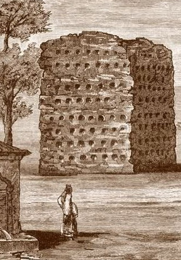

Milan Đ. Milićević
Pripovetka Poturčenica Lejla, delo je autora Milana Đ. Milićevića. Prvi put je objavljena 1879. godine u delu Zimnje večeri : priče iz narodnog života u Srbiji, u Beogradu, od strane Državne štamparije.
Poturčenica Lejla predstavlja jedan od prvih umetničkih prikaza turskog Leskovca. U osnovi, ovo je melodrama gde je predstavljena priča o ljubavi između Milete i Jane.
Čobanicu Janu, zaljubljenu u Miletu, oteo je leskovački beg Asan, sin Smail-paše. On ju je odveo u svoj harem u Leskovcu, gde je zatim bila poturčena. Poturčenica Lejla (nekada Jana), živeći lagodnim životom i u bogatstvu, ubrzo je zaboravila na svoj rod, veru pradedovsku, pa i na svog nekadašnjeg verenika. Bogato odevena i ponosna, bez ikakvih emocija i sećanja, dočekuje u konaku svoje roditelje i druge Srbe.
Milićević je predstavio život i sudbinu Jane i Milete kroz stvarne događaje iz istorije našeg naroda, konkretno pokušaj Srba da oslobode Vlasotince i okolinu. Beg, zajedno sa svojim ženama i pratnjom, beži iz Leskovca usled straha da će ustanici napasti i Leskovac i drugu okolinu južno od Niša. U jednom Hanu, nadomak Grdelice, Asan-bega ubija Mileta. Tokom turskog protivnapada stradaju Lejla (Jana), sa čitavim haremom, ali i Mileta, sa celom svojom družinom.
Ilija Petrović Strelja, poznat u narodnoj književnosti i kao Ilija Delija, bio je vojvoda iz Prvog srpskog ustanka. Po nekim podacima, rođen je kao Petar Petrović, ali je svoje ime promenio nakon pristupanja ustaničkoj vojsci.
Strelja se pojavljuje kao jedan od sporednih likova u pripovetki Poturčenica Lejla. Njegovoj družini se, u pohodu na jug Srbije, priključuje Janina (Lejlina) nekadašnja ljubav, Mileta. Strelja je u ovoj pripovetki opisan kao smeđ, vrlo krupan čovek, velikog nosa, brkova i neobično krupnih zuba. Nakon pogibije Milete i njegove družine, Strelja odlazi iz Vlasotinca ka ostatku srpske vojske koja se spremala da osvoji Niš, ali ga tamo dočekuje užasno otkriće, krah ustaničke vojske i novosazidana Ćele-kula.
Ćele-kula, rad Feliksa Kanica iz 1863. godine
Milan Đ. Milićević bio je srpski pisac, publicista, etnograf i akademik. Rođen je u Ripnju 1831. godine, a preminuo je u Beogradu 1908. godine. Jedan je od osnivača Srpske književne zadruge, a bio je i član Srpskog učenog društva, Srpske kraljevske akademije, Jugoslovenske akademije znanosti i umjetnosti u Zagrebu, kao i predsednik Srpskog arheološkog društva.
priredio Bogdan Lazović